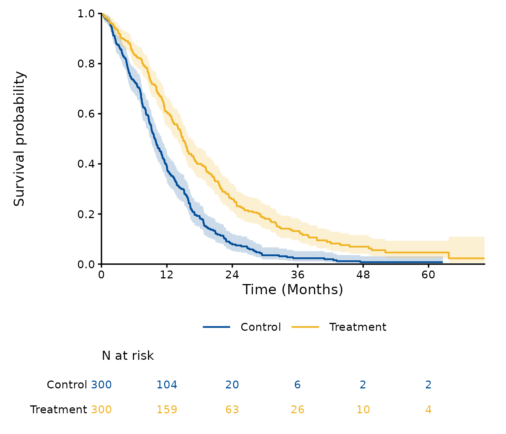
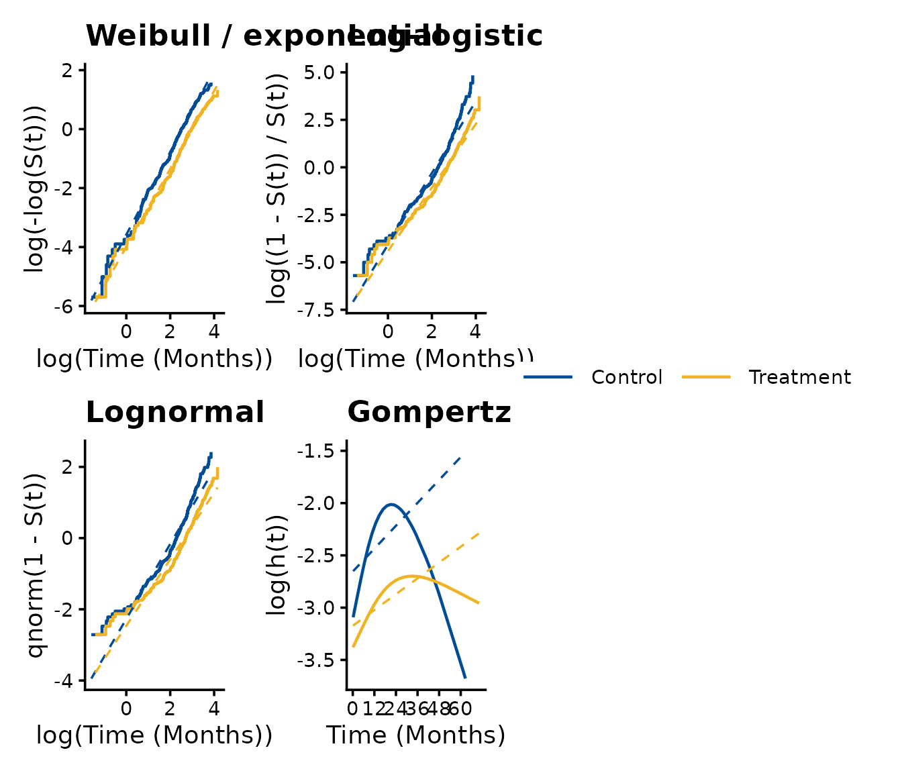
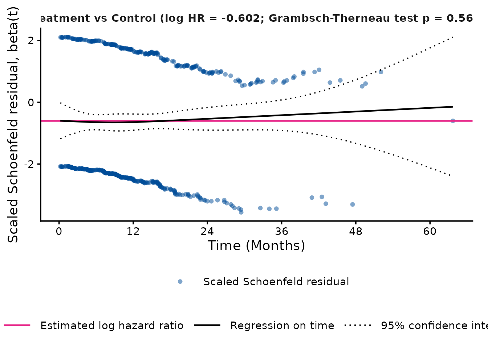
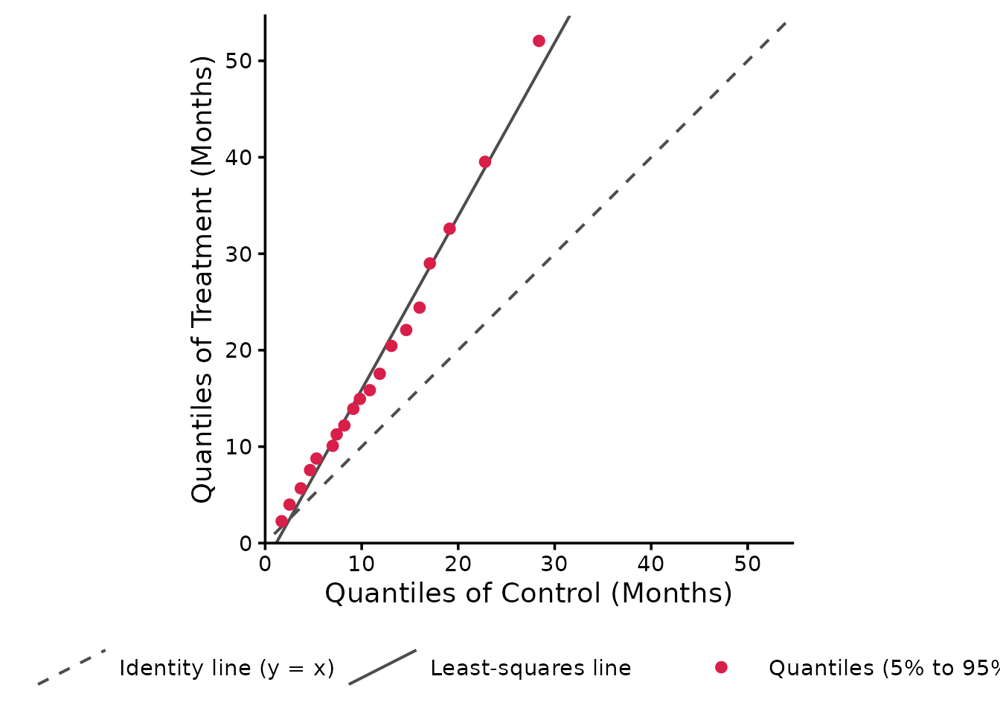
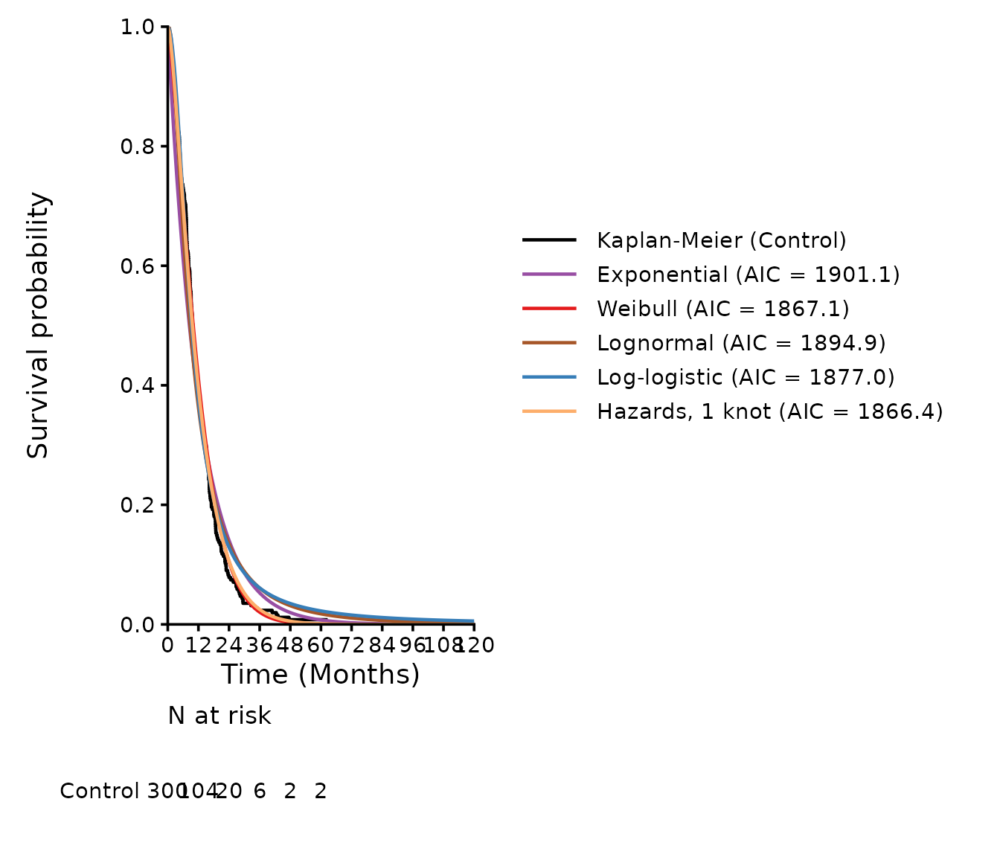
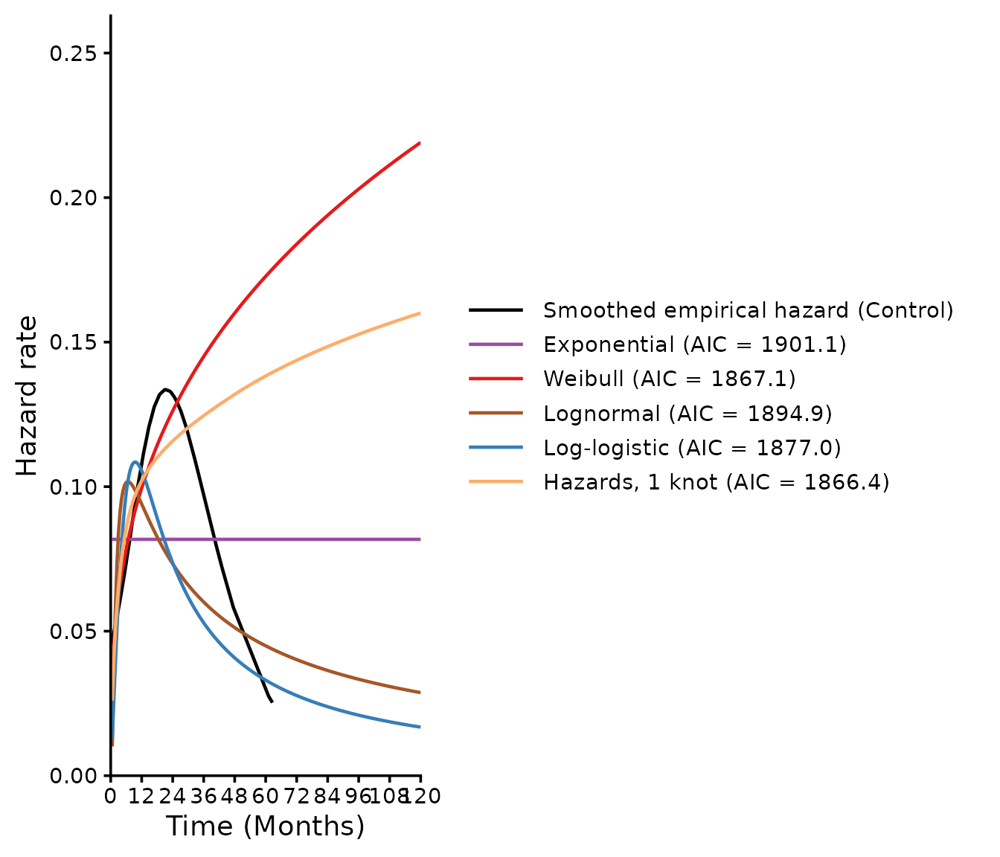

SurvFitSummary carries out the survival analyses that inform the
inputs of cost-effectiveness models for health technology assessment: it
summarises time-to-event data, fits the standard parametric models of
NICE DSU Technical Support Document 14 and Royston-Parmar spline models
to each treatment arm and to the arms together, extrapolates the
survival beyond the follow-up, and writes the results to an Excel
workbook and a Word report. This vignette goes through these steps with
the example data of the package. The models are described in more detail
in vignette("models", package = "SurvFitSummary"), and the
validation of the package in
vignette("validation", package = "SurvFitSummary").
Data
The example data fit_example.csv were simulated for two
arms of 300 patients, with the time to event in months
(AVAL) and a censoring indicator (CNSR, 1 =
censored). processing_dataset() reads a data frame or a
file (CSV, Excel, SAS or SAS transport), renames the columns to
ARM, SURVTIME and EVENT, checks
the values, and sets the control arm as the first level of
ARM.
path <- system.file("extdata", "fit_example.csv", package = "SurvFitSummary")
dat <- processing_dataset(path, column_arm = "TRT01P",
column_survtime = "AVAL", column_cnsr = "CNSR",
control_arm = "Control")
head(dat)
#> ARM SURVTIME EVENT
#> 1 Control 62.6170 0
#> 2 Control 9.2781 1
#> 3 Control 9.9689 1
#> 4 Control 10.6365 1
#> 5 Control 35.1569 1
#> 6 Control 7.2888 1
smry <- summarise_data(dat)
smry
#> ARM n events censored median median_lcl median_ucl max_followup
#> 1 Control 300 271 29 9.8152 9.0567 11.0065 62.6170
#> 2 Treatment 300 240 60 14.9464 13.8930 16.5011 70.2602
#> 3 Overall 600 511 89 11.9142 11.1882 13.1276 70.2602The control arm has 300 patients with 271 events and a median time to event of 9.8 months (95% CI 9.1 to 11.0); the treatment arm has 240 events and a median of 14.9 months (95% CI 13.9 to 16.5).
Kaplan-Meier estimates, hazard ratio and proportional hazards
km_table() gives the Kaplan-Meier estimates with their
standard errors and confidence intervals and the numbers at risk at
regular times, and plot_km() draws the curves with the
numbers at risk; each curve ends at the last observed time of its
arm.
km <- km_table(dat, interval = 12)
head(km)
#> ARM time n_risk n_event n_censor surv se lcl
#> 1 Control 0 300 0 0 1.000000000 0.000000000 1.000000000
#> 2 Control 12 104 173 23 0.385418910 0.029195580 0.332241811
#> 3 Control 24 20 80 4 0.078422012 0.016689801 0.051675533
#> 4 Control 36 6 14 0 0.023526604 0.009468082 0.010690559
#> 5 Control 48 2 4 0 0.007842201 0.005519108 0.001974184
#> 6 Control 60 2 0 0 0.007842201 0.005519108 0.001974184
#> ucl
#> 1 1.00000000
#> 2 0.44710729
#> 3 0.11901207
#> 4 0.05177476
#> 5 0.03115217
#> 6 0.03115217
plot_km(dat, conf_int = TRUE)
hr <- estimate_hazard_ratio(dat)
hr
#> model covariates strata comparison hr
#> 1 Unadjusted, unstratified None None Treatment vs Control 0.5477552
#> lcl ucl p_value n events
#> 1 0.4586977 0.6541034 2.953589e-11 600 511
ph <- test_proportional_hazards(dat)
ph
#> comparison log_hr chisq df p_value
#> 1 Treatment vs Control -0.6019269 0.3369129 1 0.5616166The Cox model without adjustment gives a hazard ratio of 0.55 (95% CI
0.46 to 0.65) for Treatment vs Control. The Grambsch-Therneau test of
the proportional hazards assumption gives p = 0.562. Covariates and
strata of the data can be added with the arguments
covariates and strata of
estimate_hazard_ratio().
Diagnostics
The transformations of the Kaplan-Meier estimate that are linear in log time for the Weibull, log-logistic and lognormal distributions, and the log of the smoothed hazard that is linear in time for the Gompertz distribution, indicate which distributions may describe each arm. The scaled Schoenfeld residuals and the quantile-quantile plot of the two arms show whether the hazards are proportional and whether the arms differ by a factor on the time scale (accelerated failure time).

plot_schoenfeld(dat)
plot_qq_survival(dat)
Fitting the models
fit_survival_models() fits, by default, the seven
standard distributions of NICE DSU TSD 14 and the spline models on the
hazard, odds and normal scales with 1 to 3 internal knots, to each arm
(independent fits) and to both arms with the arm as a covariate
(dependent fits). A model that fails or warns is recorded with its
message, and the other models are still fitted.
fits <- fit_survival_models(dat)
fits
#> Survival models fitted with SurvFitSummary (time unit: months)
#> Fits: Control (independent), Treatment (independent), Both arms (dependent)
#> 48 models: 48 without problems, 0 with warnings, 0 failed16 models were fitted to each of the 3 data sets, 48 fits in all.
gof_table() sorts the models of each fit by AIC: the lowest
AIC is that of the Odds, 2 knots model for the control arm, the Odds, 1
knot model for the treatment arm, and the Hazards, 3 knots model for
both arms.
head(gof[gof$arm == "Control", ], 6)
#> fit_type arm model n events npars loglik AIC
#> 1 independent Control Odds, 2 knots 300 271 4 -925.9856 1859.971
#> 2 independent Control Normal, 1 knot 300 271 3 -927.0389 1860.078
#> 3 independent Control Odds, 3 knots 300 271 5 -925.2354 1860.471
#> 4 independent Control Odds, 1 knot 300 271 3 -927.5223 1861.045
#> 5 independent Control Normal, 3 knots 300 271 5 -925.6227 1861.245
#> 6 independent Control Hazards, 3 knots 300 271 5 -926.0461 1862.092
#> BIC
#> 1 1874.786
#> 2 1871.189
#> 3 1878.990
#> 4 1872.156
#> 5 1879.764
#> 6 1880.611Extrapolation
The models agree within the follow-up but can differ widely beyond
it, which is why the choice of the model for a cost-effectiveness model
rests on the plausibility of the extrapolation as well as on the fit.
predict_survival() gives the survival (or the hazard) of
each model at given times, with the Kaplan-Meier estimate where the data
reach.
pred <- predict_survival(fits, times = c(12, 60, 120))
ctrl_pred <- pred[pred$fit_type == "independent" & pred$arm == "Control", ]
head(ctrl_pred[ctrl_pred$time == 120, c("model", "time", "est", "km")], 8)
#> model time est km
#> 3 Exponential 120 5.478425e-05 NA
#> 6 Weibull 120 3.140832e-09 NA
#> 9 Lognormal 120 2.093558e-03 NA
#> 12 Log-logistic 120 5.613643e-03 NA
#> 15 Gompertz 120 2.653433e-14 NA
#> 18 Generalized Gamma 120 8.606342e-07 NA
#> 21 Gamma 120 3.717499e-07 NA
#> 24 Hazards, 1 knot 120 1.294723e-07 NAFor the control arm, the survival at 10 years ranges from 0.000 to 0.006 across the 16 models.
plot_survival_fits(fits, arms = "Control",
models = c("Exponential", "Weibull", "Log-logistic",
"Lognormal", "Hazards, 1 knot"),
time_horizon = 120)
plot_hazard_fits(fits, arms = "Control",
models = c("Exponential", "Weibull", "Log-logistic",
"Lognormal", "Hazards, 1 knot"),
time_horizon = 120)
Excel workbook and Word report
write_survival_workbook() writes the tables of the
analysis to an Excel workbook, one table per sheet: the data summary,
the Kaplan-Meier table, the hazard ratios, the proportional hazards
test, the status of the models, the fit statistics, the parameters on
the natural and transformed scales with the rows of their covariance
matrices, the covariance matrices and their Cholesky factors, the
survival summary, the predicted survival at the landmark times and the
knots of the spline models.
workbook <- tempfile(fileext = ".xlsx")
write_survival_workbook(fits, workbook, conf_int = FALSE)
file.exists(workbook)
#> [1] TRUE
unlink(workbook)write_survival_report() writes a Word report with the
methods, the diagnostics, the fits of the standard parametric and spline
models with their tables and figures (with and without confidence
intervals), and the extrapolations. With all the models it takes a few
minutes, because each figure is drawn as an image.
write_survival_report(fits, "survival_report.docx",
outcome = "Overall survival")